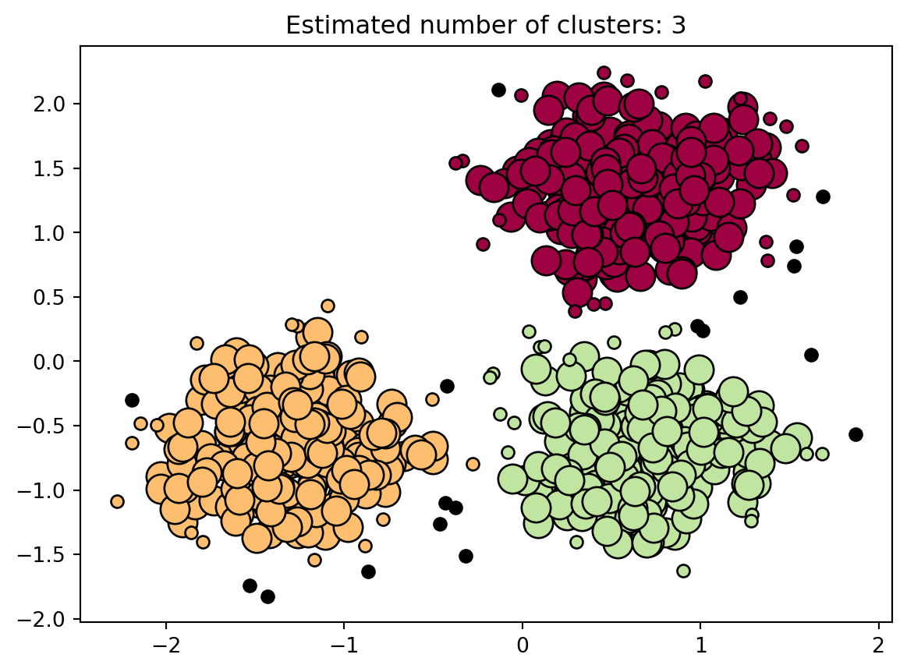

Outliers, also known as anomalies, are defined as data entries that do not follow the typical trend of the rest of the data. While the outlier may be legitimate, it is inherently suspicious as oftentimes they are obtained due to a problem involved in the data collection.
Types of Outliers
Typically, there are 3 different types of outliers. 1. Point outliers are the types of outliers that are legitimate 2. Contextual outliers are created due to issues of the data collection 3. Collective outliers are points within a data set with the goal to identify other outliers
Importance of Removing or Ignoring Outliers
Outliers can negatively affect the analysis of data sets they are found in. The main statistic affected is the mean value of the data set. As the mean is the average of the values of a random variable, it is subject to greater variety due to outliers. For example, let’s think of a scenario where this might occur. We have 100 different cars, and we want to find the average number of miles per tank. That is multiplying the miles per gallon by the size of the fuel tank in gallons. Of these cars 99 of them fall within the expected range. However, is one car, that is partly disassembled, without a fuel tank. Therefore, there is a data point where the miles per tank is 0. The mean miles per tank is likely in the multiple hundreds, but the one 0 entry is bound to drop the mean to a lower value than it should. Oftentimes, there is more nuance than the example here. For example, outliers in a medical dataset might reveal individuals with certain illnesses, and outliers in a tax data set could indicate fraud.
Methods of Outlier Detection
There are a multitude of outlier/anomaly detection algorithms available, so we will discuss some of the more common ones. \ 1. Density based detection help identify points that differ from a normal, or dense, set of data. Points within dense regions are normal, and those in less dense or isolated regions are outliers. Example of density based detection algorithms include the isolation forest, and the K-nearest neighbors algorithm. 2. Cluster based anomaly detection identify points that fall outside a cluster region. This might sound similar to the density based algorithms, but the key difference is that cluster based algorithms require a pre-defined number of clusters. This number can be optimized, but an incorrect number can result in the inclusion of outliers or the exclusion of key points. The K-means algorithm used in a previous blog post is one example of a clustering algorithm for anomaly detection. Our example will utilize a cluster algorithm which uses a standard scaler. 3. Bayesian-network algorithms look to identify the probability that a given statistic will occur. Based on that probability, significant deviations are considered anomalies. 4. Neural network algorithms involve building out a network to predict an expected series, then identify the deviations from that series.
Identifying Anomalies Utilizing a Cluster Based Algorithm
For this example, we will not be utilizing a dataset. Instead, we will synthesize our own data utilizing a sklearn package. Of course, an actual dataset could be used, but this will work to showcase the topic at hand.
Code
import numpy as np import pandas as pdfrom scipy import stats import matplotlib.pyplot as plt import matplotlib.font_manager from sklearn import metricsfrom sklearn.cluster import DBSCANfrom sklearn.datasets import make_blobsfrom sklearn.preprocessing import StandardScaler
In this example, there are many points surrounding some apparent clusters. That being said, there are some noticable points that lie outside of the apparently dense clusters. We can use additional steps to view whether or not these points are in fact anomalies.
Code
db = DBSCAN(eps=0.3, min_samples=10).fit(X)labels = db.labels_# Number of clusters in labels, ignoring noise if present.n_clusters_ =len(set(labels)) - (1if-1in labels else0)n_noise_ =list(labels).count(-1)print("Estimated number of clusters: %d"% n_clusters_)print("Estimated number of outliers: %d"% n_noise_)
Estimated number of clusters: 3
Estimated number of outliers: 18
Above, we can see that there appear to be 3 main clusters, and roughly 18 outliers/anomalies. This is useful information in itself, but we can create a visual of these points as well.
Code
unique_labels =set(labels)core_samples_mask = np.zeros_like(labels, dtype=bool)core_samples_mask[db.core_sample_indices_] =Truecolors = [plt.cm.Spectral(each) for each in np.linspace(0, 1, len(unique_labels))]for k, col inzip(unique_labels, colors):if k ==-1:# Black used for noise. col = [0, 0, 0, 1] class_member_mask = labels == k xy = X[class_member_mask & core_samples_mask] plt.plot( xy[:, 0], xy[:, 1],"o", markerfacecolor=tuple(col), markeredgecolor="k", markersize=14, ) xy = X[class_member_mask &~core_samples_mask] plt.plot( xy[:, 0], xy[:, 1],"o", markerfacecolor=tuple(col), markeredgecolor="k", markersize=6, )plt.title(f"Estimated number of clusters: {n_clusters_}")plt.show()

Analyze the Results
Looking at the resulting scatter plot shown above, we can clearly see the 3 clusters labeled with red, yellow, and green. We are also able to view a multitude of black points. These are the points that correspond to the outliers. Essentially, these points are so far outside of the clusters, that they would be considered outliers. From here, a few different things can be done about these outliers. First, they can simply be removed to ensure cleaner results and plots. Additionally, these outliers can be analyzed to see why they might exist. Of course, this dataset is synthetic, but there could be valuable data associated with the outliers. The data collection mechanism could have problems, the analysis techniques could use some work, or maybe the outliers are the main focus of the data. Either way, anomaly/outlier detection is extremely important in machine learning and data analysis.
Conclusion
As we have shown, there are a ton of methods to identify outliers, and doing so can provide a lot of useful results. If you would like to learn more, here are some of the resources that I used in the creation of this blog post.
Geeksforgeeks - Machine Learning for Anomaly Detection (https://www.geeksforgeeks.org/machine-learning-for-anomaly-detection/#)
LinkedIn - What are the pros and cons of using clustering vs. density-based methods for anomaly detection? (https://www.linkedin.com/advice/3/what-pros-cons-using-clustering-vs-density-based-methods)
Sklearn - Demo of DBSCAN clustering algorithm (https://scikit-learn.org/stable/auto_examples/cluster/plot_dbscan.html)